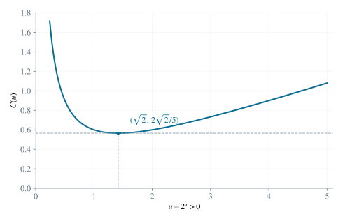

2.1 消去对数项
因为 y>0，两个对数都存在。换底公式给出 log4y=log2y/log24=(1/2)log2y。因此第二个方程乘以 2 后为 2⋅2−x−log2y=4C。与第一个方程逐项相加，左侧两个对数相消，右侧为 C+4C=5C，得到：
5C=2x+2⋅2−x. （2）令 u=2x>0，则 2−x=1/u，得到必要条件：
C=51(u+u2),u>0. （3）2.2 用平方分解求下界
对于任意正实数 u，可将与候选最小值的差写成平方：
u+u2−22=u(u−2)2≥0. （4）分母为正，故等号成立当且仅当 u=2。于是任何可行参数均满足：
C≥522. （5）
图 1. C(u)=(u+2/u)/5 在 u=2 处取得最小值；虚线标出取等位置。
2.3 构造达到下界的未知数
现在恢复达到下界的原变量。由 u=2x=2=21/2 以及指数函数的单射性，得到 x=1/2。取 C=22/5 后，第一个方程唯一确定 log2y=C−2x，即：
log2y=C−2x=522−2=−532. （6）y=2−32/5>0. （7）2.4 验证两个原方程
对上述 x,y,C，分别计算原方程左侧：
2x+log2y=2−532=522=C, （8）2−x−log4y=22+1032=542=2C. （9）因此下界可以达到；而平方差证明表明取等时 x 唯一，第一个方程又唯一确定 y。结论为：
Cmin=522,x=21,y=2−32/5. （10）